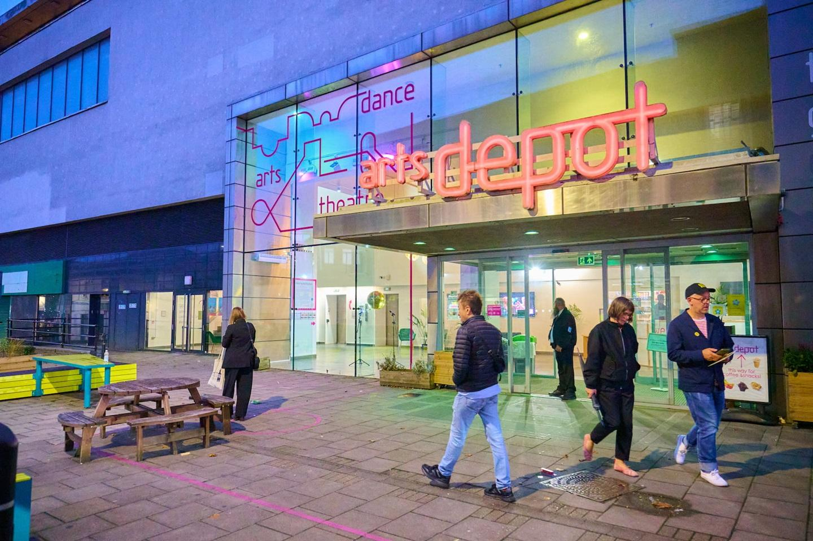

Finchley Lido Leisure Centre
A major leisure destination around the Great North Leisure Park, offering a mix of fitness and aquatic activities.
Visit website ↗
A major leisure destination around the Great North Leisure Park, offering a mix of fitness and aquatic activities.
Visit website ↗A handy cluster for an easy evening out, with leisure, food and entertainment close together.
Visit website ↗A local green-space escape where the feel changes quickly from busy roads to woodland and open ground.
Find out more ↗North Finchley has a strong sporting tradition. Find local clubs, fixtures, youth sessions and volunteering opportunities here.
Visit website ↗Exhibitions, workshops and open studios in and around N12, with practical details and booking links.
Visit website ↗Indoor activities include crafts, classes, leisure sessions, libraries and family-friendly entertainment.
Find a library ↗